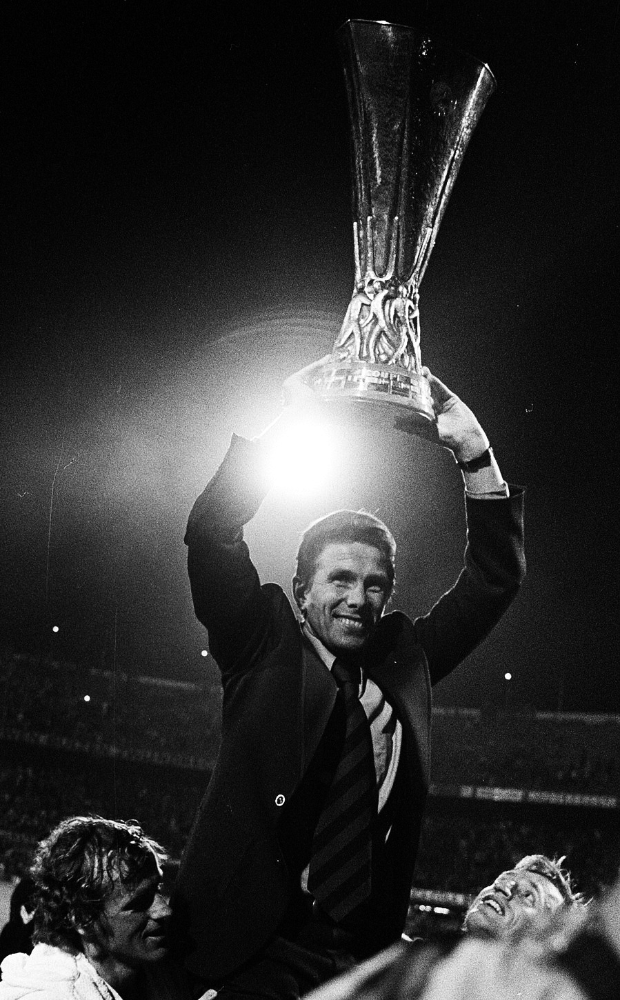
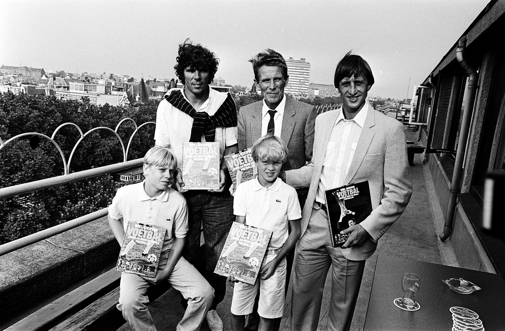

COPA DE LA UEFA

ROTTERDAM · 29 · 5 · 1974
Pelé, 1960 · AFP/Scanpix · dominio público
ENTRENADOR DEL FEYENOORDWIEL COERVER
FINAL DE LA COPA DE LA UEFA · GLOBAL
FEYENOORD 4 – 2 TOTTENHAM
Foto: Rob Mieremet / Anefo (Nationaal Archief) · CC0 · marcador y calendario: recreación
Fotogramas dibujados: recreación

W. COERVER · PRESENTACIÓN DEL LIBRO, 1983
WIEL COERVER
VOETBAL
leerplan voor
de ideale
voetballer
PORTADA · RECREACIÓN
Foto: Rob Bogaerts / Anefo (Nationaal Archief) · CC0
Progresión del método, resumida · recreación
Fotos: Rob Mieremet / Anefo (CC0), AFP/Scanpix (dominio público) y Rob Bogaerts / Anefo (CC0),
vía Wikimedia Commons. Televisor, cintas, fotogramas, portada y pirámide: recreación.